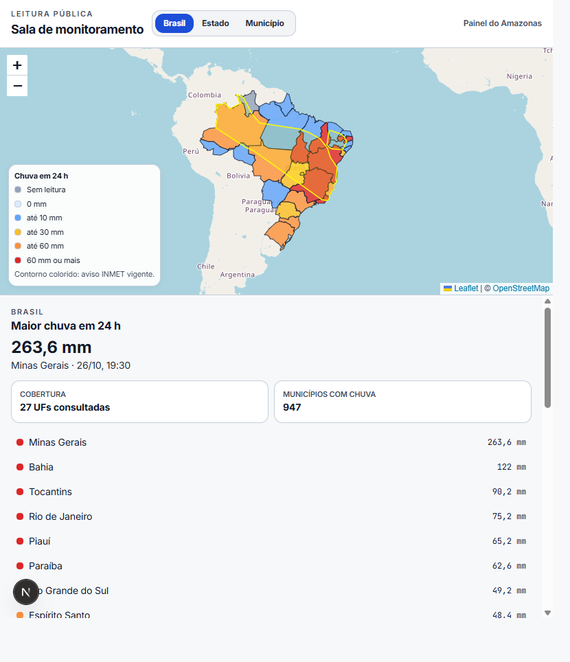
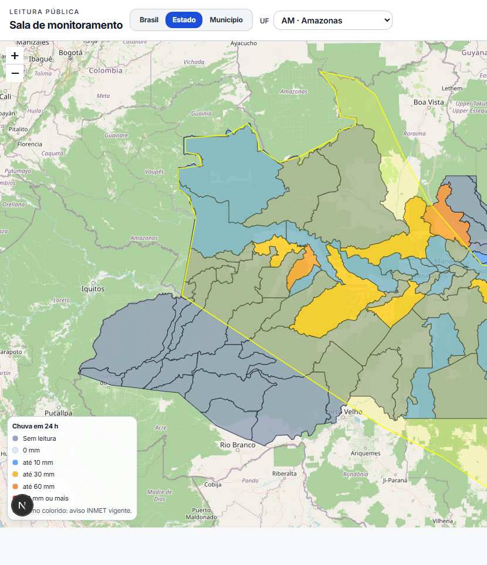
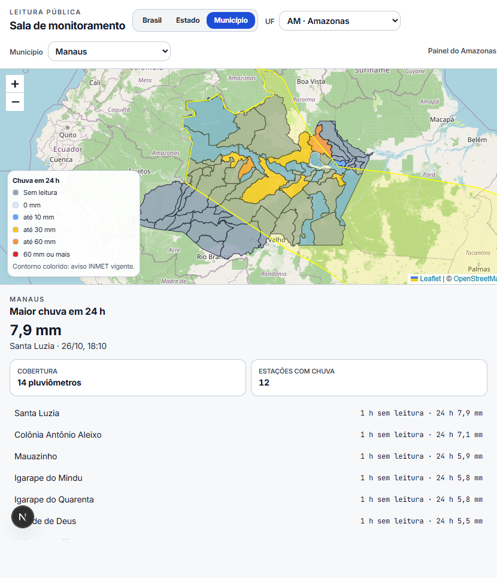

Município
Pluviômetros da cidade, acumulado em 1 h e em 24 h, e o horário da leitura em Brasília.
Igor da Silva Jacaúna · monitoramento territorial
Um mapa para ler chuva e aviso meteorológico no município, no estado e no Brasil. A leitura usa só dado público e deixa claro o que ainda depende de uma pessoa decidir.

Pluviômetros da cidade, acumulado em 1 h e em 24 h, e o horário da leitura em Brasília.
Malha municipal do IBGE pintada pela chuva. O clique abre o município.
Visão das 27 UFs, com avisos vigentes do INMET por cima do mapa.


Órgão público que acompanha vários municípios, ou equipe privada que precisa da mesma leitura territorial sem montar a integração do zero.
As cores são faixas de leitura. A sala não emite alerta oficial e não substitui a Defesa Civil, o CEMADEN nem o INMET.